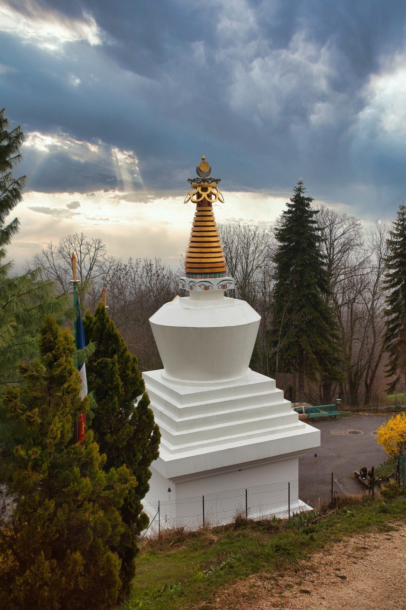

Sa Sainteté Gyalwang Drukpa — photo à remplacer par le cliché réunissant Sa Sainteté, Drubpön Ngawang Rimpoché et Lopön Thrinlé.
Drukpa Grenoble est un centre bouddhique de l'école tibétaine du vajrayana, et plus particulièrement de la Lignée Drukpa.
Il est placé sous l'autorité spirituelle de Sa Sainteté Gyalwang Drukpa. Le Vénérable Drubpön Ngawang Rimpoché, représentant de Sa Sainteté en Europe, et Lopön Thrinlé y dirigent régulièrement des retraites d'enseignements.
Sa Sainteté Gyalwang Drukpa — photo à remplacer par le cliché réunissant Sa Sainteté, Drubpön Ngawang Rimpoché et Lopön Thrinlé.

« Contribuer à nourrir les causes d'un bonheur relatif, et aussi plus profond et véritable, pour toutes celles et tous ceux qui s'y relient. »
Lopön ThrinléSa Sainteté le 12e Gyalwang Drukpa, Son Éminence Drukpa Thuksey Rinpoché, le Vénérable Drubpön Ngawang Rimpoché et Lopön Thrinlé.
Méditations, enseignements et retraites, dialogue interreligieux et actions Live to Love.
Notre affiliation nationale et les aumôneries bouddhistes.
Nous écrire, adhérer à l'association, rejoindre les temps de pratique.

Drukpa Grenoble est relié au centre bouddhique Drukpa Plouray, en Bretagne, où sont organisées des retraites collectives et des enseignements, notamment en présence de Drubpön Ngawang Rimpoché.
Visiter Drukpa Plouray